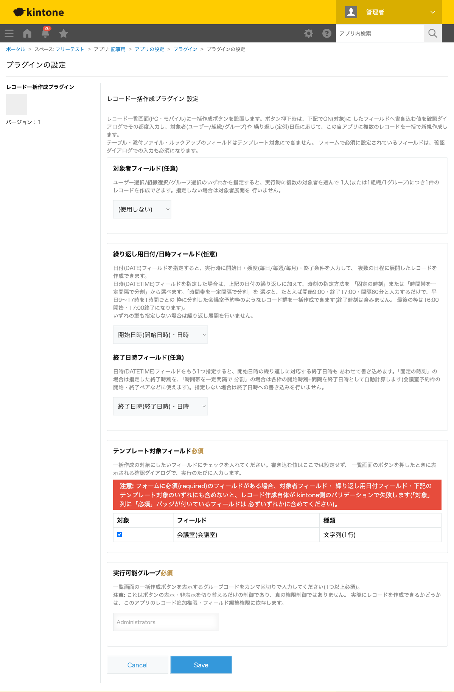
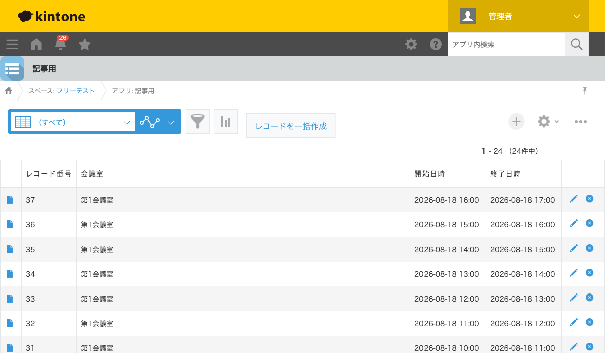

GovAppsプラグイン 安全性を確認できる無料kintoneプラグイン集
「平日9時から17時まで、1時間ごとの会議室予約枠を作りたい」という場合、1件ずつ手作業で 作成すると1日8件×5日=40件もの作業になります。この記事では、日時の繰り返しをまとめて 自動生成する方法を、実際に24件の予約枠を一括作成した結果つきで解説します。
→ 対応プラグインを見るkintone標準機能には、日時の範囲を一定間隔で分割して複数レコードを自動生成する機能は ありません。「複製」機能で1件ずつ複製しながら時刻を手で書き換えるか、Excelなどで 一覧を作ってCSVインポートするのが現実的な代替手段になりますが、いずれも手間がかかります。
| 方法 | 向いている場合 | 注意点 |
|---|---|---|
| JavaScriptを自作する | 社内に開発者がいて、独自の分割ルールが必要な場合 | 時間帯分割・開始/終了時刻の計算・上限件数チェックなどを自前で実装・保守する必要がある |
| 有料の他社プラグイン | 予算があり、サポートを重視する場合 | 月額課金が発生する。生成ロジックがブラックボックスなことが多い |
| GovAppsプラグイン(このプラグイン) | 無料で、時間帯分割をすぐに試したい場合 | 一度に作成できる件数には上限(500件)があります |
レコード一括作成プラグインは無料・広告なしで、 ソースコードをGitHubで全公開 しています。レコード作成はkintone標準のREST APIを100件ずつ逐次実行するだけで、外部サーバーへの 通信は一切ありません。
レコード一括作成プラグインで、繰り返し用フィールドに 日時(DATETIME)型のフィールドを指定すると、日付の繰り返しに加えて時刻の指定方法も選べます。

一覧画面の「レコードを一括作成」ボタンを押し、会議室名を入力したうえで、開始日・頻度「毎日」・ 回数「3」、時刻の指定方法「時間帯を一定間隔で分割」で9:00〜17:00・間隔60分を指定して実行すると、 3日分×1時間ごと8枠=24件の予約枠レコードが一括で作成されます。 各枠の終了日時(開始時刻+1時間)も自動的に計算されます。

「平日5日分にしたい」「30分刻みにしたい」といった調整も、実行時のダイアログで数値を変えるだけです。